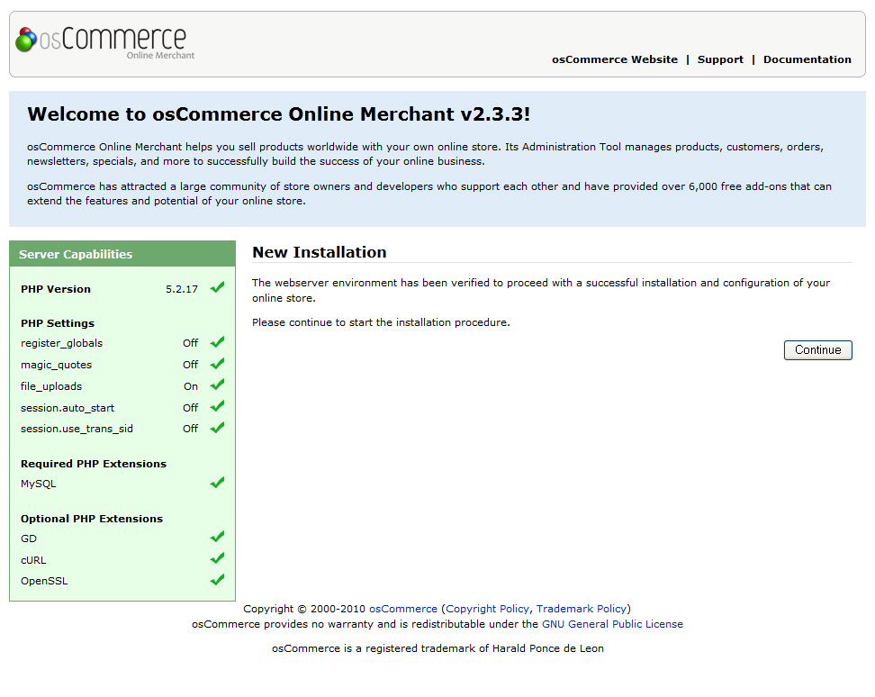
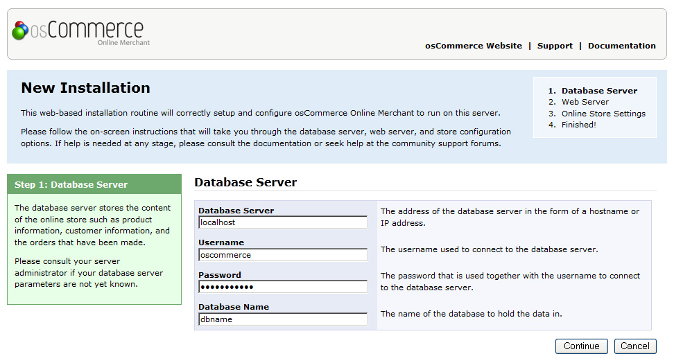
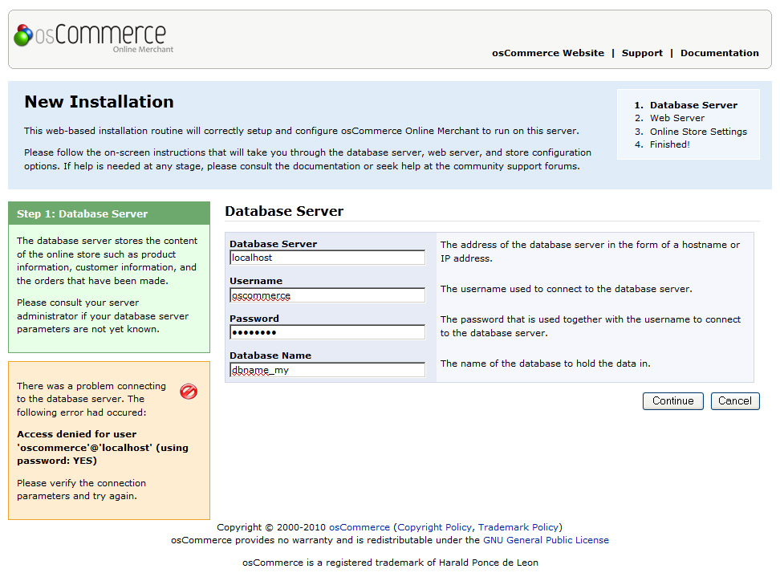
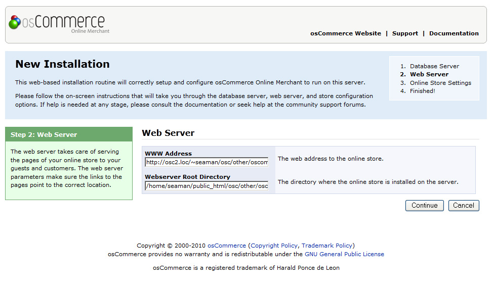
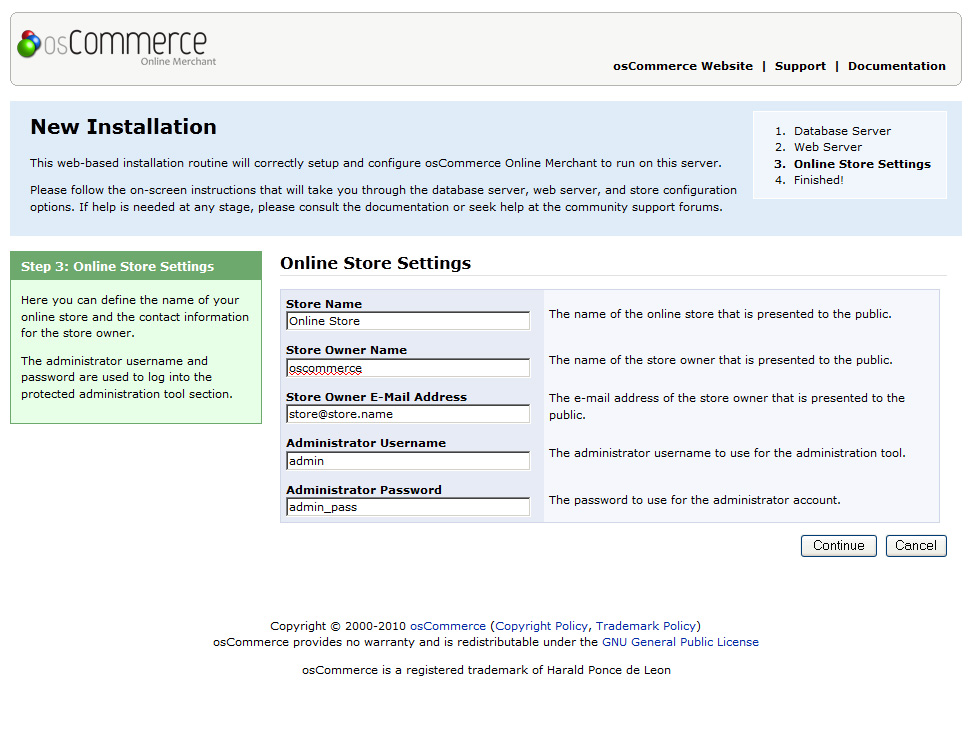
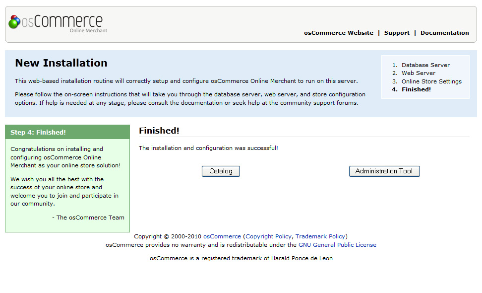

Template Installation
New Installation
Technical Requirements
Technical Requirements
osCommerce Online Merchant can be installed on any PHP enabled web server that can connect to a MySQL database. This includes shared servers, dedicated servers, and local installations running on Linux, Unix, BSD, Mac OS X, and Microsoft Windows operating systems.
Web Server
The web server must support PHP either as a module or allow execution of CGI scripts. For performance reasons FastCGI is recommended over CGI.
PHP
The following PHP options are recommended to be set in the php.ini configuration file:
When you've completed the preparations steps you can proceed to the osCommerce installation.
| register_globals | Off |
| magic_quotes_gpc | Off |
| file_uploads | On |
| session.auto_start | Off |
| session.use_trans_sid | Off |
The following PHP extensions are mandatory:
| MySQL | Off |
The following PHP extensions are recommended:
| GD | Image processing module. |
| cURL | Network communication library. |
| OpenSSL | Encryption library. |
MySQL Database Server
The minimum MySQL version required is v3.23. It is recommended to use the latest MySQL 4 or MySQL 5 version on the database server. The following MySQL storage engines are supported:
| MyISAM | Default storage engine. |
Pre-Installation Steps
Pre-Installation Steps
osCommerce Online Merchant is a web based solution that needs its relevant files to exist on the web server. The files can be copied to the web server by extracting the download package on your computer and uploading its contents to the web server via FTP, or by copying the download package to the web server directly and extracting its contents there.
- Copying the Files to the Web Server
- File Permissions
- Database
- Web Server and Database Server Details
Copying the Files to the Web Server
The contents of the download package need to be copied to the public HTML directory the web server is serving from.
- /home/shinyredapples/public_html/
- /srv/www/htdocs/
- /usr/local/htdocs/
- /var/www/vhosts/yourwebsite.com/httpdocs/
The contents of the download package once extracted is:
- catalog (directory)
- CHANGELOG
- community_docs.pdf
- documentation.pdf
- extras (directory)
- LICENSE
- STANDARD
- upgrade.html
Using FTP to Copy the Download Package Contents to the Web Server
The download package of osCommerce Online Merchant should be saved and extracted on your computer to reveal its contents. The catalog directory must be copied to the public HTML directory on the web server.
This can be achieved on most FTP clients by dragging the catalog directory from your local file browser panel to the remote panel listing the files on the web server.
Feel free to check out the following tutorial on how to upload files to a server.
All PHP files must be uploaded in ASCII mode (not in Binary mode).
File Permissions
The following files need to be writable by the web server.
| Files | Web Server Writable |
|---|---|
| catalog/includes/configure.php | |
| catalog/admin/includes/configure.php |
Feel free to check out osCommerce. Uploading files and changing permissions tutorial.
The catalog/includes/configure.php and catalog/admin/includes/configure.php files must have their web server writable permission removed after the installation procedure has completed successfully. This is described in the Post-Installation Steps chapter.
Please consult with your hosting provider for the correct permission flag to allow the web server to write to those files. This is commonly defined with a permission flag of 755.
In some cases a world write permission flag of 777 can be used but may lead to an insecure installation of osCommerce Online Merchant.
Changing the file permissions can be performed by most FTP clients or directly on the web server.
Using FTP/cPanel file manager to Change File Permissions
Most FTP clients are capable of changing file permissions on the web server. This is commonly performed by right-clicking on the file and selecting "Properties" or "Attributes" on the context menu.
The file permissions can be changed by allowing all users to read, write, and execute the file, or by manually entering the world readable and world writable flag of 777.
Feel free to check out the following tutorial on how to manage file/folders permissions using FTP manager or cPanel filemanager.
Database
A MySQL database on the web server or database server is required for the installation procedure to successfully import the database table structure and required data settings.
Feel free to check out the following tutorials on create a database using cPanel and how to create a database with GoDaddy.
Web Server and Database Server Details
The following web server and database server details are required during the installation procedure. Please consult your hosting provider if these details are not known.
Web Server Details
| Setting | Description | Possible Value |
|---|---|---|
| Server Address | The web address to the online store. | http://www.yourwebsite.com/catalog/ |
| Root Directory | The directory where the online store is installed on the web server. | /home/yourwebsite/public_html/catalog/ |
Database Server Details
| Setting | Description | Possible Value |
|---|---|---|
| Server Address | The address of the database server in the form of a hostname or IP address. | localhost |
| Username | The username used to connect to the database server. | oscommerce_user |
| Password | The password that is used together with the username to connect to the database server. | securepassword |
| Database Name | The name of the database to hold the data in. | oscommerce |
Installation Procedure
Installation Procedure
The web based installation procedure configures the online store and imports the configuration data into the database. This is necessary to create a fully functional online store and to create an administrator that administrates the online store through the Administration Tool.
The configuration values provided by default are safe to use but may need to be changed depending on the environment of the web server.
- Installing a New Online Store
- Step 1: Welcome Page
- Step 2: Database Server
- Step 3: Web Server
- Step 4: Online Store Settings
- Step 5: Finished!
Please review the Pre-Installation Steps chapter before continuing with the installation procedure.
Installing a New Online Store
The web based installation procedure is automatically started when accessing the online store through a web browser. This can be achieved by entering the WWW address of osCommerce Online Merchant installation in your browser.
For example:
http://www.yourwebsite.com/catalog/
osCommerce Online Merchant automatically detects if the installation has already been completed and redirects to the installation procedure if it has not yet been performed.
Feel free to check out osCommerce. Final steps of installation tutorial.
Installation step 1. Welcome Page
The first step is the welcome page shown in Figure 1 which displays the current recommended configuration settings for PHP.

Figure 1. Welcome Page
It is recommended to update a PHP configuration value, or to install and activate a PHP extension, if it is marked against the recommended setting.
When making PHP configuration changes or when installing and activating a PHP extension, the web server service needs to be restarted for the changes to take effect. Once restarted, refreshing the welcome installation page and viewing the Server Capabilities listing can confirm if the PHP configuration changes have taken place and if it meets the recommended settings.
Installation step 2. Database Server
The second step shown in Figure 2a sets the database connection parameters to successfully connect to the database server, to import the database table structure, and to import required data.

Figure 2a. Database Server Configuration
The installation procedure verifies the values entered before proceeding to the next step. If there is a problem connecting to the database server an error message is shown similar to the message shown in Figure 2b.

Figure 2b. Database Server Connection Error Message
Check to make sure the correct username, password, and database name are listed.
Step 3: Web Server
The third step shown in Figure 3 sets the web server parameters to successfully serve the online store to users.

Figure 3. Web Server Configuration
Step 4: Online Store Settings
The fourth step shown in Figure 4 sets the store owner and administrator settings for the online store.

Figure 4. Store Owner Settings
It is important to keep note of the administrator username and password as these are used to login and to access the Administration Tool.
Additional administrators can be created in the Administration Tool after the installation procedure has been successfully completed.
Step 5: Finished!
The last step in the installation procedure stores the database server and web server parameters to the configuration file on the web server. On successfully saving the configuration file, the installation procedure is finalized and the online store is ready to be used as shown on Figure 5.

Figure 5. Successful Installation Confirmation
It is important to keep note of the administrator username and password as these are used to login and to access the Administration Tool.
Please review the Post-Installation Steps chapter after the installation procedure has been successfully completed to secure the online store.
Post-Installation Steps
Post-Installation Steps
Upon successful installation of osCommerce Online Merchant, the following steps need to be performed to secure the installation of the online store.
- Remove Installation Files
- Reset File and Directory Permissions
- Extra Protection for the Administration Tool
Remove Installation Files
The catalog/install directory must be removed from the web server otherwise a user could use the installation procedure and reconfigure the online store to use another database server.
Reset File and Directory Permissions
Configuration Files
The file permissions on catalog/includes/configure.php and catalog/admin/includes/configure.php must be set to deny write access by the web server service. This is commonly performed by setting the permission flag to a read only value of 644 or 444 depending on your server.
Writable Directories
The following directories must be set to allow the web server service to write to for the Administration Tool to function properly. This is commonly performed by setting the permission flags to a world-writable value of 777.
| Directories | Web Server Writable |
|---|---|
| catalog/images | |
| catalog/cache (create this folder) | |
| catalog/admin/backups | |
| catalog/admin/images/graphs |
Extra Protection for the Administration Tool
The Administration Tool is secured by its own login routine but is still publicly accessible. It is recommended to further protect the Administration Tool by setting a htaccess password on the catalog/admin directory.
If no extra protection is set for the Administration Tool, it is recommended to move the catalog/admin/backups directory outside the public html directory otherwise public access to the backup files would be possible. The location of the backup directory must be correctly defined in catalog/includes/configure.php.
Feel free to check out the following tutorial on how to secure your osCommerce store.
Catalog (Frontend)
Catalog (Frontend)
Template Layout and Header Tags
A basic template layout structure has been introduced in osCommerce Online Merchant v2.2 to simplify the process of customizing the design of the catalog frontend.
Building the Template Layout
The template design layout is defined in catalog/includes/template_top.php and catalog/includes/template_bottom.php, with the page content existing in the base catalog files.
The final template layout is built with the following procedure:
- Base catalog file requested (eg, catalog/index.php)
- Application initialization through catalog/includes/application_top.php
- Control logic executed for actions performed
- Template design layout initialization through catalog/includes/template_top.php
- Page content loaded
- Template design layout finalized through catalog/includes/template_bottom.php
- Application finalized through catalog/includes/application_bottom.php
The default template layout is defined as:
| catalog/includes/template_top.php |
|
| Base catalog files (eg, catalog/index.php) |
|
| catalog/includes/template_bottom.php |
|
Header and Meta Tag Modules
As all base catalog files use the same catalog/includes/template_top.php file to define the HTML doctype, page title, and header tags, a modular header and meta tags implementation complements the template layout structure that allows page specific modules to define the page title and set additional header and meta tags.
The header and meta tag modules are located in catalog/includes/modules/header_tags inside sub-directories matching the name of the base catalog file (without the file extension), and are loaded in alphabetical order.
An example header and meta tag module is catalog/includes/modules/header_tags/product_info/title.php which adds the product name to the page title on the product information page.
If the base catalog file name is changed, the matching header and meta tag module sub-directory must also be renamed otherwise the modules will no longer load together with the page.
The header and meta tag modules must follow the following format:
class ht_productInfo_title {
function parse() {
global $oscTemplate;
/* module specific code goes here */
$oscTemplate->setTitle('New Page Title Name, ' . $oscTemplate->getTitle());
}
}
Module Class Name
The module class name must be defined as:
| ht_productInfo_title | |
|---|---|
| ht | Short code for "Header Tag" to distinguish header and meta tag modules from other modules. |
| productInfo | The name of the matching base catalog file in camel case form (without the file extension). |
| title | The filename of the module (without the file extension). |
Examples of modules include:
| Filename | Class Name |
|---|---|
| catalog/includes/modules/header_tags/create_account/module_name.php | ht_createAccount_module_name |
| catalog/includes/modules/header_tags/index/module_name.php | ht_index_module_name |
| catalog/includes/modules/header_tags/products_new/module_name.php | ht_productsNew_module_name |
Module parse() Method
The module must contain a static parse() method which contains the main code for the module, and must define $oscTemplate as a global variable to alter the header and meta tags for the page.
The oscTemplate class provides the following three methods to alter the tags for the page:
getTitle
Returns the current title of the page. By default the page title is defined by the TITLE language definition which is the name of the online shop.
$title = $oscTemplate->getTitle();
setTitle
Sets a new title for the page.
$oscTemplate->setTitle('New Page Title');
addHeaderTag
Adds a new header tag to the page.
$oscTemplate->addHeaderTag('
');
Installing New Modules
New modules can be installed by copying the module files to the appropriate sub-directories in catalog/includes/modules/header_tags for the page they should be loaded for.
The modular implementation allows page specific header and meta tags to be altered without needing to edit core source code files.
Useful Resources
We did our best to make this documentation as clear as possible. However if you have any difficulties with osCommerce template or any suggestions on improving template or documentation - feel free to contact our support team through the:
- Live Chat
- Online Help Desk
- Phone: 1-347-342-0463